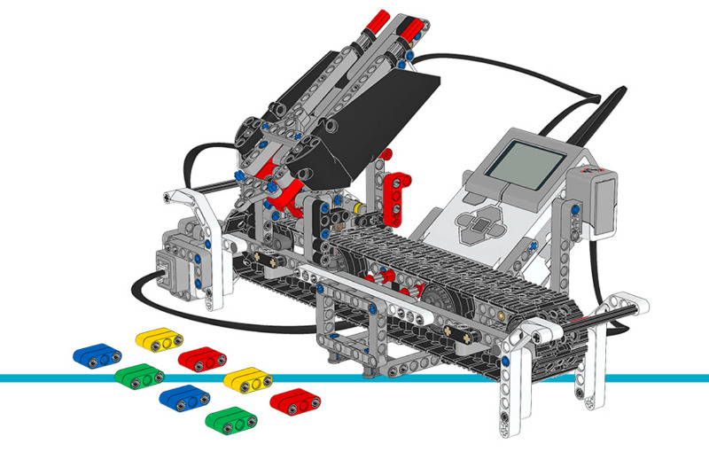

カラーソーター¶
このサンプルプロジェクトでは、カラーソーターが
ColorSensor を使って色付きのTechnicビームをスキャンします。
色付きのビームを1本ずつスキャンしてトレイに入れます。 ビープ音は色が登録されたことを示します。トレイがいっぱいになるか中央ボタンを押すと、 ロボットが色ごとにTechnicブロックを仕分けし始めます。
組み立て説明書
こちらからコアセットモデルの組み立て説明書をすべて確認できます。また、 このリンクからカラーソーターの説明書に直接アクセスできます。

Figure 27 カラーソーター
サンプルプログラム
#!/usr/bin/env pybricks-micropython
"""
Example LEGO® MINDSTORMS® EV3 Color Sorter Program
--------------------------------------------------
This program requires LEGO® EV3 MicroPython v2.0.
Download: https://education.lego.com/en-us/support/mindstorms-ev3/python-for-ev3
Building instructions can be found at:
https://education.lego.com/en-us/support/mindstorms-ev3/building-instructions#building-core
"""
from pybricks.hubs import EV3Brick
from pybricks.ev3devices import Motor, TouchSensor, ColorSensor
from pybricks.parameters import Port, Button, Color, ImageFile, SoundFile
from pybricks.tools import wait
# 色付きのオブジェクトは、赤・緑・青・黄のいずれかです。
POSSIBLE_COLORS = [Color.RED, Color.GREEN, Color.BLUE, Color.YELLOW]
# EV3 Brickを初期化します。
ev3 = EV3Brick()
# コンベヤーベルトを動かしてオブジェクトを排出するモーターを初期化します。
belt_motor = Motor(Port.D)
feed_motor = Motor(Port.A)
# タッチセンサーを初期化します。ベルトモーターがソーターモジュールを
# 左端まで動かしたことを検出するために使います。
touch_sensor = TouchSensor(Port.S1)
# カラーセンサーを初期化します。オブジェクトの色を検出するために使います。
color_sensor = ColorSensor(Port.S3)
# メインループです。色付きのオブジェクトを8個スキャンして投入するのを待ちます。
# その後、色ごとに仕分けします。処理が終わると最初に戻り、
# 次のセットをスキャンして投入できます。
while True:
# フィードモーターを正しい開始位置にします。
# これは、モーターがストールするまで正転させることで行います。
# ストールとは、それ以上動けなくなることです。この端点から、
# モーターを180度逆転させると開始位置になります。
feed_motor.run_until_stalled(120, duty_limit=50)
feed_motor.run_angle(450, -200)
# コンベヤーベルトのモーターを正しい開始位置にします。
# これは、まずベルトモーターを逆転させてタッチセンサーが
# 押されるまで動かします。そこでモーターを止めて角度をゼロにリセットします。
# こうすると、後でゼロまで逆転させたときに
# この開始位置に戻ることになります。
belt_motor.run(-500)
while not touch_sensor.pressed():
pass
belt_motor.stop()
wait(1000)
belt_motor.reset_angle(0)
# オブジェクトをスキャンしたら、すべての色の番号をリストに保存します。
# 空のリストから始め、色を追加するたびに大きくなります。
color_list = []
# このループはオブジェクトの色をスキャンします。8個のオブジェクトが
# スキャンされてシュートに入るまで繰り返します。これは、リストの長さが
# まだ8未満の間、ループを繰り返すことで実現します。
while len(color_list) < 8:
# カラーセンサーを指す矢印を表示します。
ev3.screen.load_image(ImageFile.RIGHT)
# すでにスキャンしたオブジェクトの数を表示します。
ev3.screen.print(len(color_list))
# 中央ボタンが押されるか、色がスキャンされるのを待ちます。
while True:
# 中央ボタンが押されていればTrue、そうでなければFalseを保存します。
pressed = Button.CENTER in ev3.buttons.pressed()
# カラーセンサーで測定した色を保存します。
color = color_sensor.color()
# 中央ボタンが押されるか色が検出されたら、
# ループを抜けます。
if pressed or color in POSSIBLE_COLORS:
break
if pressed:
# ボタンが押されていたら、ループを早めに終了します。
# 残りのオブジェクトがスキャンされてシュートに入るのを
# 待つのはやめます。
break
# そうでなければ色がスキャンされたので、リストに追加(append)します。
ev3.speaker.beep(1000, 100)
color_list.append(color)
# 同じオブジェクトを見続けている間に同じ色を再登録しないよう、
# 続行する前に、センサーがオブジェクトを見なくなるまで
# 待ちます。
while color_sensor.color() in POSSIBLE_COLORS:
pass
ev3.speaker.beep(2000, 100)
# 中央ボタンを指す矢印を表示し、終了かどうかを尋ねます。
ev3.screen.load_image(ImageFile.BACKWARD)
wait(2000)
# スキャンが完了したことを音と画像で知らせます。
ev3.speaker.play_file(SoundFile.READY)
ev3.screen.load_image(ImageFile.EV3)
# 保存した色のリストに従ってブロックを仕分けします。
# リスト内の各色をループで順に処理します。
for color in color_list:
# 各仕分け動作の間に1秒待ちます。
wait(1000)
# 色に応じた正しい位置までコンベヤーベルトのモーターを動かします。
if color == Color.BLUE:
ev3.speaker.say('blue')
belt_motor.run_target(500, 10)
elif color == Color.GREEN:
ev3.speaker.say('green')
belt_motor.run_target(500, 132)
elif color == Color.YELLOW:
ev3.speaker.say('yellow')
belt_motor.run_target(500, 360)
elif color == Color.RED:
ev3.speaker.say('red')
belt_motor.run_target(500, 530)
# コンベヤーベルトが正しい位置に来たら、
# 色付きのオブジェクトを排出します。
feed_motor.run_angle(1500, 180)
feed_motor.run_angle(1500, -180)